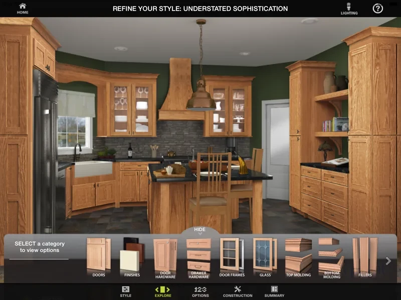
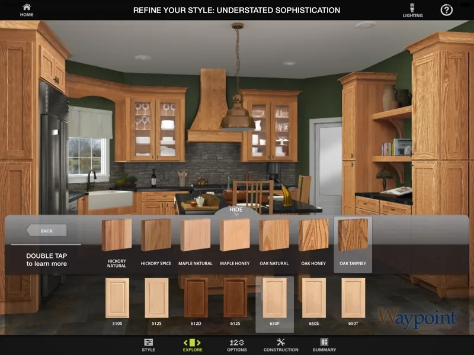
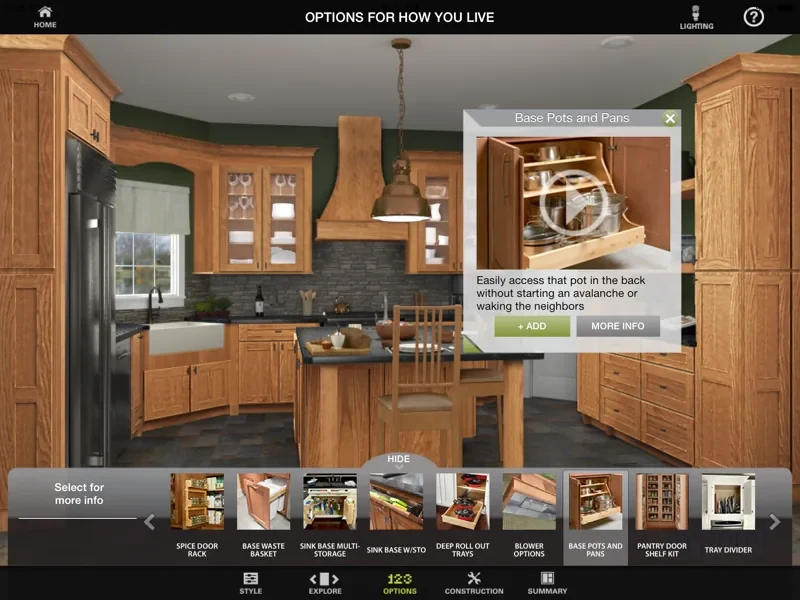
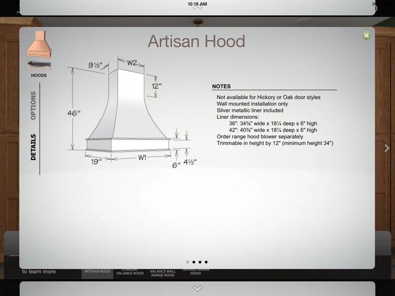
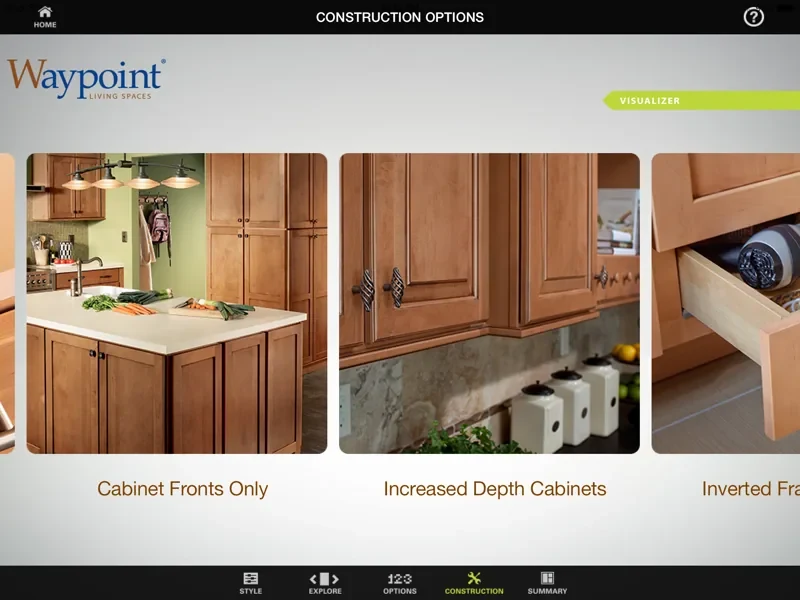

Waypoint Kitchen Visualizer
Helping shoppers see their kitchen before they choose it.

- Client
- Waypoint Living Spaces
- Company
- The Scylla Group (agency) · 2011–2019
- Role
- Creative Director and UX Designer
- Discipline
- iPad app, UX/UI design, product visualization
Challenge
Waypoint Living Spaces needed an in-store iPad tool to help salespeople guide shoppers through cabinet door styles, finishes and options.
Solution
- A guided flow: start with species, finishes or overlays, or browse everything.
- A door gallery for side-by-side comparison, and full kitchens organized by lifestyle.
- Construction options and specifications one tap away, so salespeople answer technical questions on the spot.
My role
- Developed user journeys
- Designed product and user workflows
- Designed the interface
- Developed 3D assets, motion graphics and animations
- Provided quality assurance
Highlights





Results
- A highly visual, interactive experience
- An intuitive, simplified selection process
- Contextual options based on each shopper’s style
- A shared vision through inspiration and education